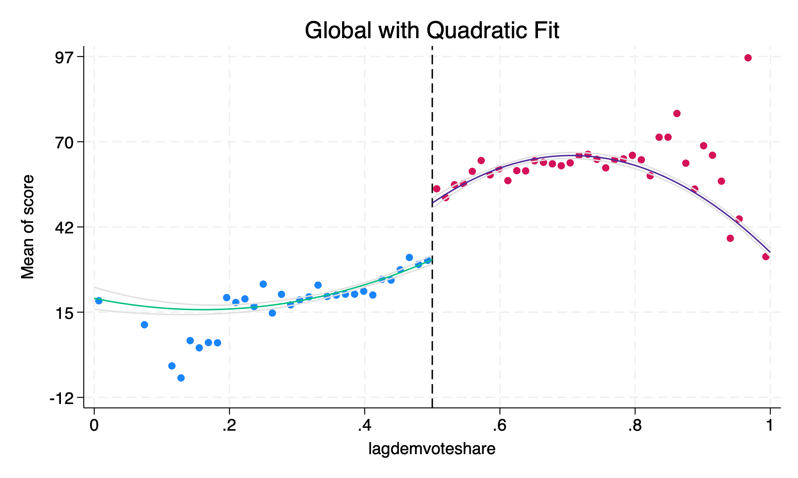
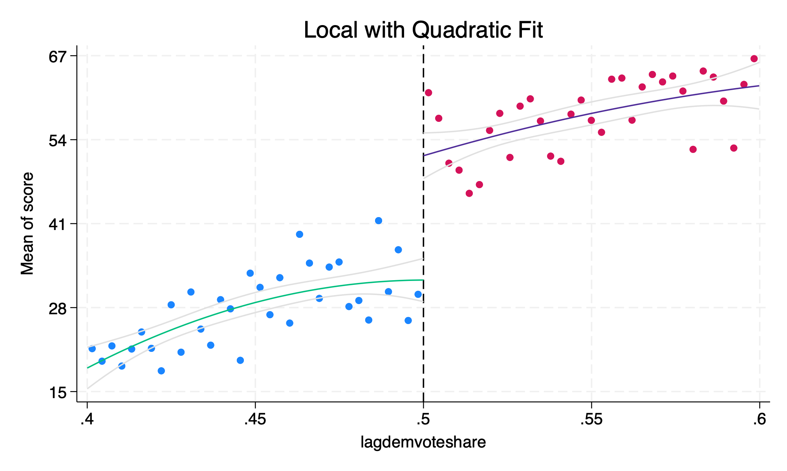
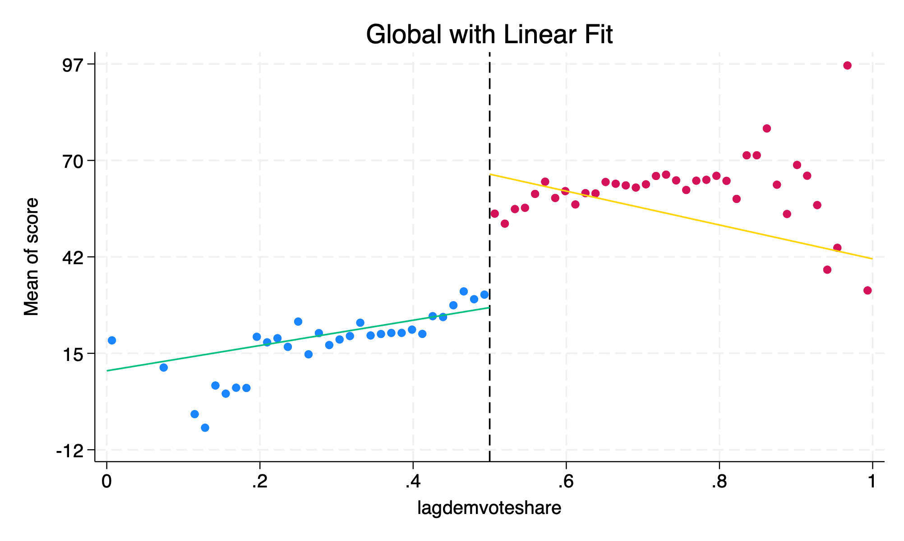
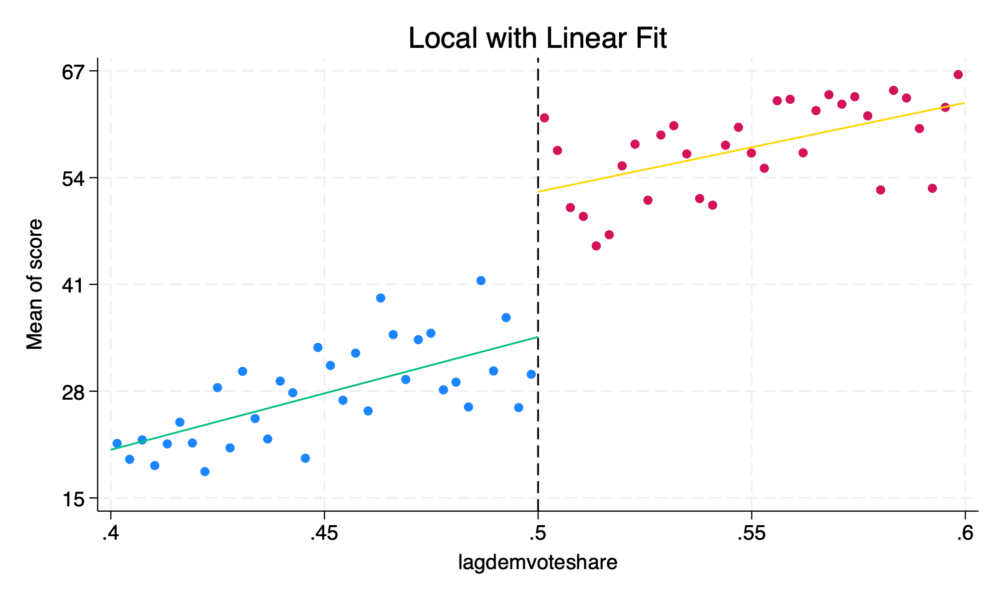
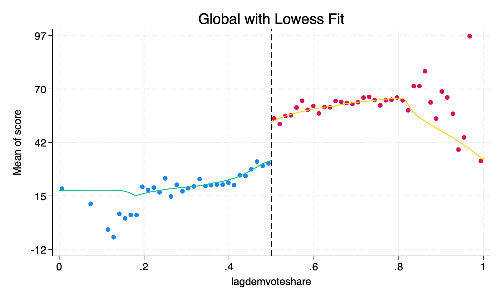

Chapter 3 Visualize Global and Local Regressions
We’ll now switch to local polynomial regressions as a way to assess the impact of treatment at the cutoff. A nonparametric method in RDD is to estimate a model that doesn’t assume a functional form for the relationship between the outcome and running variable:
\[ y=f(x)+\varepsilon \]
We’ll calculate the \(E[Y]\) for each bin of the running variable \(x\). Stata has cmogram command to estimate nonparametric graphics.
3.1 Install cmogram
One method to help look for discontinuities and the continuity assumption is cmogram. It is good to visualize what potential trends in the running variable are - e.g. your eyes.
First, we will need to install cmogram.
ssc install cmogram //If this gives you an error, please comment it out and install cmogram manuallyMake sure to check the bins after cmogram has run in the output window with cmogram. If there doesn’t seem to be any trends in the running variable, then polynomials will not help much.
3.2 Global Regression with Quadratic Fit
Next, we can visualize our different functional forms.

This is similar to Lee, et al. (2004) Figure 1, but with slightly different bin sizes. A quadratic fit seem to mimic Lee, Moretti, and Butler (2004) the closest.
3.3 Local Regression with Quadratic Fit
Next, we will use a local regression with a window of \((0.4,0.6)\) and use a quadratic fit.
cmogram score lagdemvoteshare if lagdemvoteshare > 0.4 & lagdemvoteshare < 0.6, cut(0.5) scatter line(0.5) qfitci title("Local with Quadratic Fit")
The quadratic fit might not be appropriate here, which is maybe why our estimates were so far off.
3.4 Global Regression with Linear Fit
Next, we will focus on a global linear regression.

Linear Fit seem to be influenced by outliers far from the cutoff. The global linear fit may work around \([0.2,0.8]\), but does not perform well below \(0.2\) and \(0.8\).
3.5 Local Regression with Linear Fit
Next, we will use a local linear regression with a window of \((0.4,0.6)\).
cmogram score lagdemvoteshare if lagdemvoteshare > 0.4 & lagdemvoteshare < 0.6, cut(0.5) scatter line(0.5) lfit title("Local with Linear Fit")
The local linear fit appears to be appropriate. Using this method, we find our results were closest to Lee, et al. (2004).
3.6 Global Regression with Lowess Fit
Finally, we will use a global regression but we will use a lowess fit. Lowess comes from “locally weighted scatter plot smooth”. A lowess fit is a non-parametric regression method that is particularly useful for creating a smooth line through a scatterplot of data points.
